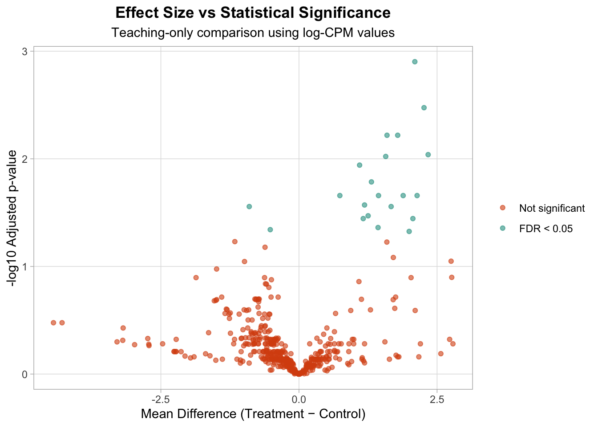

counts <- readr::read_csv("data/demo-counts.csv", show_col_types = FALSE)
meta <- readr::read_csv("data/demo-metadata.csv", show_col_types = FALSE)
count_matrix <- as.matrix(counts[-1])
rownames(count_matrix) <- counts$gene_id
library_sizes <- colSums(count_matrix)
cpm <- sweep(count_matrix, 2, library_sizes, FUN = "/") * 1e6
log_cpm <- log2(cpm + 1)
group <- meta$condition
p_values <- apply(log_cpm, 1, function(x) {
stats::t.test(x[group == "Control"], x[group == "Treatment"])$p.value
})
results <- tibble::tibble(
gene_id = rownames(log_cpm),
p_value = p_values
) |>
dplyr::mutate(
adjusted_p = p.adjust(p_value, method = "BH")
)Lesson 6: From Results to Biological Claims
Why this lesson matters
Most RNA-seq confusion does not come from computation.
It comes from interpretation.
You can normalize data.
You can visualize structure.
You can compute p-values.
But the real question is:
What can you confidently claim?
This lesson builds the bridge between statistical output and biological reasoning.
Separate structure from inference
From previous lessons you observed:
- Global structure using PCA
- Sample similarity using clustering
- Mean–variance relationships
These are descriptive layers.
They suggest patterns.
They do not prove biological mechanisms.
A PCA separation does not mean genes are statistically different.
A cluster split does not imply causality.
Structure provides context.
Inference requires modeling.
A simplified teaching comparison (not production)
To illustrate interpretation logic, we perform a simple gene-wise comparison using log-CPM values.
This is not a production RNA-seq method.
It is a teaching device to understand reasoning structure.
Add effect size
Interpretation requires magnitude, not just significance.
group_means <- t(apply(log_cpm, 1, function(x) {
c(
mean_control = mean(x[group == "Control"]),
mean_treatment = mean(x[group == "Treatment"])
)
}))
effect_df <- tibble::as_tibble(group_means) |>
dplyr::mutate(
gene_id = rownames(group_means),
mean_diff = mean_treatment - mean_control
)
results <- dplyr::left_join(results, effect_df, by = "gene_id")Now each gene has:
- adjusted p-value
- direction of change
- magnitude of change
Define consistent plot style
cdi_plot_theme <- function() {
ggplot2::theme_light() +
ggplot2::theme(
plot.title = ggplot2::element_text(hjust = 0.5, face = "bold"),
plot.subtitle = ggplot2::element_text(hjust = 0.5),
panel.grid.minor = ggplot2::element_blank(),
legend.position = "right"
)
}Visualize the relationship: effect size vs significance
volcano_df <- results |>
dplyr::mutate(
neg_log10_adj_p = -log10(adjusted_p),
significant = adjusted_p < 0.05
)
ggplot2::ggplot(
volcano_df,
ggplot2::aes(x = mean_diff,
y = neg_log10_adj_p,
color = significant)
) +
ggplot2::geom_point(alpha = 0.6) +
ggplot2::labs(
title = "Effect Size vs Statistical Significance",
subtitle = "Teaching-only comparison using log-CPM values",
x = "Mean Difference (Treatment − Control)",
y = "-log10 Adjusted p-value"
) +
cdi_plot_theme() +
ggplot2::scale_color_manual(
values = c("FALSE" = "#d9500f", "TRUE" = "#2a9d8f"),
labels = c("Not significant", "FDR < 0.05"),
name = NULL
)
This visualization shows:
- Some genes with small effects but strong statistical evidence
- Some genes with large effects but weaker statistical support
- The geometry of interpretation
Statistical significance alone is insufficient.
Effect size alone is insufficient.
Responsible claims require both.
Calibrated interpretation
A disciplined statement sounds like this:
Global structure suggests condition-related variation. A subset of genes shows statistically detectable mean shifts with varying magnitudes. Formal count-based modeling is required before drawing pathway-level or mechanistic conclusions.
Notice what this does:
- acknowledges structure
- acknowledges statistical evidence
- avoids overstatement
- defers mechanism
That is calibrated reasoning.
What the free track establishes
You now understand:
- How count matrices behave
- Why normalization exists
- How exploratory analysis reveals structure
- Why modeling is necessary
- How to separate statistical output from biological claims
Closing perspective
RNA-seq analysis is not a sequence of commands.
It is a reasoning chain:
Design → Structure → Modeling → Effect Size → Context → Claim
Break that chain, and results become fragile.
Respect it, and even complex outputs remain interpretable.